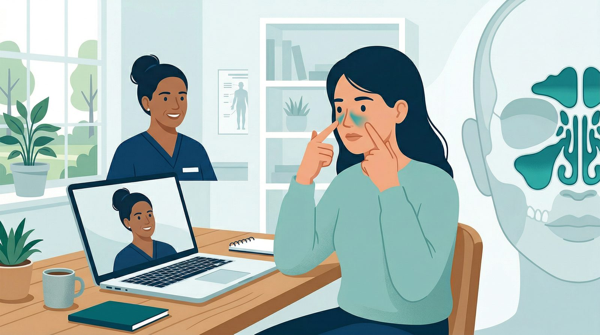
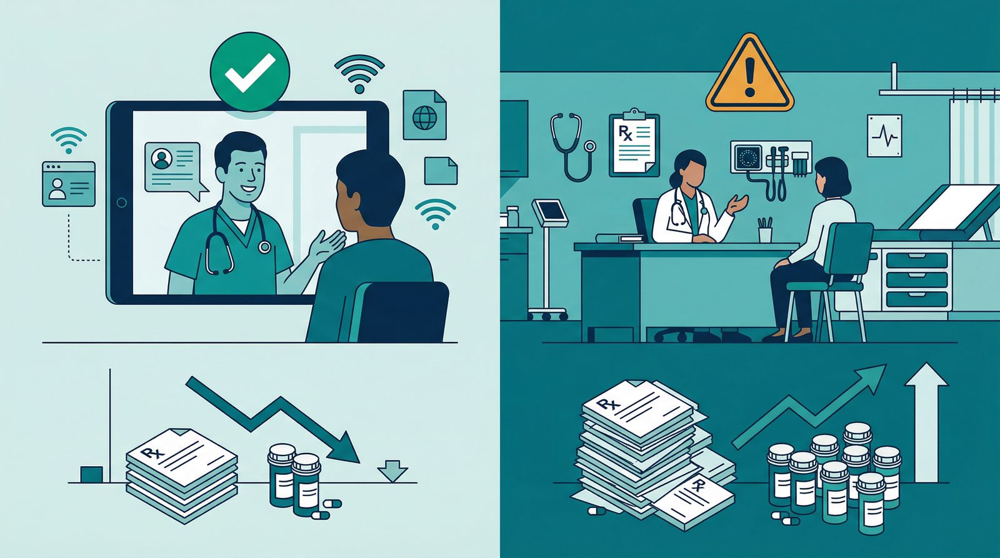

Key Takeaways
- Virtual visits produced more guideline-concordant sinusitis diagnoses than in-office visits (69.1% vs 45.7%, P<.001).[1]
- Patients seen virtually were less often prescribed antibiotics (68.6% vs 94.3% in-office), but more often returned for sinusitis within 24 hours (8% vs 1.7%) and 30 days (14.9% vs 7.4%).[1]
- In a Massachusetts study, virtual visits during the 2020 shutdown did not increase antibiotic prescribing for acute rhinosinusitis compared with in-person visits a year earlier (72.1% vs 76.7%).[2]
- In children, telemedicine with their own primary care practice led to antibiotics less often than direct-to-consumer telemedicine companies (28.9% vs 37.2%), though management judged against the stated diagnosis was similar.[3]
- The 2025 AAO-HNSF guideline update extends watchful waiting (without antibiotics) to all adults with uncomplicated acute bacterial sinusitis, with assurance of follow-up.[8][9]

Why Sinusitis Is Ideal for Telehealth
In a national analysis of US ambulatory care visits in 2010 and 2011, sinusitis was the single diagnosis linked to the most antibiotic prescriptions per 1,000 people.[13] That fact alone makes it worth examining closely, because many of those prescriptions may not be needed: in the same analysis, acute respiratory conditions led to 221 antibiotic prescriptions per 1,000 people each year, but only 111 were estimated to be appropriate.[13] CDC estimates that 90% to 98% of rhinosinusitis cases are viral, and that antibiotics may not help even when the cause is bacterial.[12] The IDSA guideline estimates that bacterial infection of the sinuses follows a viral cold in only 0.5% to 2% of adult cases.[11]
What makes sinusitis a strong fit for virtual care is how the diagnosis works. The IDSA guideline identifies acute bacterial rhinosinusitis by any of three presentations: symptoms lasting 10 days or more without any improvement; a severe start, with fever of 39°C (102°F) or higher and purulent nasal discharge or facial pain for at least 3 to 4 days in a row at the beginning of the illness; or "double-sickening," where new fever, headache, or more nasal discharge follows a typical cold that lasted 5 to 6 days and was improving.[11] These are things a patient can describe clearly on a video call. I don't need to press on your face to hear that story.
In clinical practice, the physical exam for uncomplicated sinusitis adds surprisingly little to the clinical picture. The authors of a randomized telemedicine trial made a similar point about respiratory infections in general: when the history shows no red flags, the physical exam adds little to the final diagnosis.[5] Tenderness over the sinuses, nasal congestion, discolored drainage: a patient can point to where the pressure is and describe what they're seeing when they blow their nose. The diagnosis is built on the timeline and pattern of symptoms, not on a penlight exam.
That matters because, in my experience, the traditional in-office visit creates pressure on both the patient and the physician to "do something." When someone drives to a clinic, waits 45 minutes, and sits in an exam room, the expectation of leaving with a prescription is hard to resist. A virtual visit removes some of that pressure and creates space for the conversation that actually helps: Is this viral or bacterial? Do you need an antibiotic, or will supportive care get you through this?
The Evidence: Virtual Visits Match or Beat In-Person Care
One of the most direct comparisons comes from a 2019 retrospective cohort study in Open Forum Infectious Diseases of 350 adults diagnosed with sinusitis in a single primary care network, 175 seen by virtual visit and 175 in the office.[1] Virtual visits produced guideline-concordant diagnoses 69.1% of the time, compared with 45.7% for office visits (P<.001). Fewer patients seen virtually received antibiotics (68.6% vs 94.3%, P<.001). When antibiotics were prescribed, guideline-concordant drug selection was similar in both groups (67.5% vs 64.8%). There was a tradeoff: patients seen virtually were more likely to return for sinusitis within 24 hours (8% vs 1.7%) and within 30 days (14.9% vs 7.4%).
Because the study was retrospective, it shows an association, not why virtual visits differed.[1] One possibility, discussed below, is structure: when guideline criteria are built into the visit workflow, physicians may apply them more consistently.
A larger study from Massachusetts Eye and Ear, published in The Laryngoscope, compared 2,075 adults seen by virtual visit for acute rhinosinusitis during the March to May 2020 COVID-19 shutdown with 3,654 adults seen in person in the same months of 2019.[2] The question was whether telehealth would lead to more antibiotic prescribing, since physicians couldn't perform a physical exam. It did not. The overall prescribing rate was lower for the virtual visits (72.1% vs 76.7%; odds ratio 0.783, P<.001), and among otolaryngology providers alone there was no significant difference (P=.781). Because the two groups came from different years, other changes between 2019 and 2020 may also have played a part.
A small randomized trial at Hospital Israelita Albert Einstein in São Paulo, Brazil, published in 2022, added further support.[5] It enrolled 98 low-risk adults with acute respiratory symptoms at an emergency department; 48 were assigned to a brief telemedicine consultation followed by the usual in-person evaluation. Telemedicine diagnosis was non-inferior to face-to-face assessment, although agreement on the specific diagnosis was poor by the authors' own measure, and telemedicine diagnosed no sinusitis where the in-person evaluation diagnosed it in 7% of the same patients. Telemedicine trended toward less antibiotic prescribing than the in-person evaluation (5.9% vs 17.6%, P=.125), a difference that was not statistically significant.
When clinical pathways are built into telehealth workflows, results may improve further. A pilot in a virtual urgent care program, published in the Journal of Telemedicine and Telecare, added a sinusitis care bundle: a clinical pathway with communication scripts, electronic health record order panels, and a patient education phrase.[7] Across 69,785 patients before and 64,019 after, sinusitis diagnoses rose (3.2% to 6.2%, P<.001) while antimicrobial prescribing fell by 3.9% (P<.001).

Antibiotic Stewardship: The Unexpected Benefit
One of the early concerns about telehealth was that it might make antibiotic overprescribing worse. Without a physical exam to confirm findings, wouldn't physicians default to prescribing "just in case"? The studies above do not support that fear.
For sinusitis specifically, these studies found that virtual visits led to antibiotics less often[1] or no more often[2][4] than in-person visits. One possible reason, which the studies did not test, is that a visit built around the symptom history keeps the focus on the timeline that separates viral from bacterial illness.
Not all telehealth is equal, though. A 2024 study in JAMA Network Open compared matched telemedicine visits for acute respiratory infections among 27,686 commercially insured children.[3] Visits with the child's own primary care practice led to antibiotics less often than visits with direct-to-consumer (DTC) telemedicine companies (28.9% vs 37.2%; RR 0.78), and fewer ended in a diagnosis for which antibiotics may be appropriate (19.0% vs 28.4%), including sinusitis (9.9% vs 15.5%; RR 0.64). Once a diagnosis was made, however, the share of visits with antibiotic management that did not match guidelines for that diagnosis was the same (20.2% vs 20.1%). These are pediatric data, so they may not apply directly to adults.
My takeaway for patients: how the visit is set up matters, and so does the physician. A physician who knows your history, and who isn't rewarded for prescribing something to keep a satisfaction score high, will usually make better decisions than a system designed to move patients through quickly. That applies whether the visit is virtual or in person.
Australian data published in the Journal of Medical Internet Research in 2025 point the same way for some respiratory infections, though not for sinusitis.[4] Among 2,392 general practice registrars (doctors in training), antibiotics were prescribed less often in telehealth than face-to-face consultations for sore throat (adjusted odds ratio 0.69) and upper respiratory tract infection (adjusted odds ratio 0.64), with no significant difference for acute sinusitis (adjusted odds ratio 1.0). The authors found no evidence that telehealth increased registrars' antibiotic prescribing for these infections.
| Study | Setting | Key Finding |
|---|---|---|
| Open Forum Infect Dis, 2019[1] | 350 adults, one primary care network | Virtual visits: 69.1% guideline-concordant diagnosis vs 45.7% in-office (P<.001); more revisits at 24 hours and 30 days |
| Mass. Eye and Ear / Laryngoscope, 2021[2] | 5,729 ARS visits (2020 virtual vs 2019 in person) | Antibiotics 72.1% virtual vs 76.7% in person (P<.001); no difference among otolaryngology providers (P=.781) |
| Einstein (São Paulo) RCT, 2022[5] | 98 adults randomized (48 to telemedicine) | Telemedicine diagnosis non-inferior to face-to-face for respiratory infections |
| JAMA Network Open, 2024[3] | 27,686 children | Primary care telemedicine: 28.9% antibiotic receipt vs 37.2% for DTC companies (RR 0.78); diagnosis-matched management similar |
| JMIR, 2025[4] | 2,392 Australian GP registrars | Less antibiotic prescribing via telehealth for sore throat and URTI; no difference for sinusitis |
| Am J Rhinol Allergy, 2021[6] | 69 CRS patients | Patient satisfaction similar: PSQ-18 scores 78.1 vs 78.4 (P=.67) |
| J Telemed Telecare, 2024[7] | Virtual urgent care sinusitis care bundle (69,785 patients before, 64,019 after) | Antimicrobial prescribing fell 3.9% (P<.001) after the bundle |
| AAO-HNSF, 2025[8][9] | Guidelines update | Watchful waiting extended to all uncomplicated acute bacterial sinusitis; first-line course 5 to 7 days for most adults (was 5 to 10) |
What This Means for You
If you've had sinus pressure, congestion, and facial pain for less than 10 days, the most likely cause is a virus.[11][12] A virtual visit can help you determine whether you need antibiotics or whether supportive care, such as pain relievers, nasal saline rinses, or an intranasal steroid spray, will get you through it.[10] Many sinus infections get better on their own without antibiotics.[14]
If your symptoms have persisted beyond 10 days without improvement, or if they got better and then worsened again, a virtual visit is still a good first step. Those patterns suggest possible bacterial sinusitis,[11] and a physician can evaluate whether you meet the criteria for antibiotic treatment without you needing to sit in a waiting room.
The 2025 AAO-HNSF guideline update extends watchful waiting (without antibiotics) as an initial strategy to all adults with uncomplicated acute bacterial sinusitis, regardless of severity, and recommends offering it with assurance of follow-up.[8][9] CDC likewise encourages watchful waiting for uncomplicated cases when reliable follow-up is available.[12] The update does not set a fixed observation period; it says the length of watchful waiting may depend on the factors and timing under which the diagnosis was made.[8] (The 2015 version asked clinicians to reassess a patient who worsened or had not improved by 7 days after diagnosis.[10]) That fits telehealth well. Your physician can assess your symptoms, recommend supportive care, and arrange follow-up to reassess. If you're not improving, antibiotics can be prescribed then. If you are improving, you've avoided an unnecessary prescription entirely.
When an antibiotic is indicated, the 2025 update recommends amoxicillin with or without clavulanate as first-line therapy for 5 to 7 days for most adults, shorter than the 5 to 10 days in the 2015 version.[8][10] The IDSA guideline also recommends 5 to 7 days for uncomplicated acute bacterial sinusitis in adults, and prefers amoxicillin-clavulanate over amoxicillin alone.[11] All of this can be managed through a virtual visit.
When You Still Need an In-Person Visit
Telehealth works well for uncomplicated sinusitis, but certain symptoms warrant hands-on evaluation. In my practice, I redirect patients to in-person or emergency care when I hear any of the following:
- Vision changes: double vision, swelling or redness around the eye, a bulging eye, or reduced eye movement (possible orbital complication; NICE advises hospital referral)[15][16]
- Severe facial or forehead swelling, or severe facial pain: can mean infection spreading beyond the sinuses[14][15]
- Fever above 102°F (39°C): may indicate a more serious bacterial process[11]
- Neck stiffness, severe headache, or confusion: raises concern for spread inside the skull, including meningitis; go to an emergency department right away[15][17]
- Symptoms worsening despite antibiotics: treatment failure requires re-evaluation and possibly imaging[8][10]
- Recurrent sinusitis (several episodes in a year): may point to an underlying structural or immune problem that needs workup[10][14]
- Suspected structural problems: nasal polyps or other anatomic concerns need direct examination, such as nasal endoscopy[10]
These situations are uncommon; serious complications of sinusitis are very rare.[16] Most sinus infections, the kind that make you miserable for a week or two but eventually resolve, can be managed through a virtual visit with a physician who knows what to ask and when to escalate.
The evidence, mostly from observational studies, suggests that for uncomplicated sinusitis telehealth can match in-person care on antibiotic prescribing, and in one primary care network it did better on guideline-concordant diagnosis.[1][2][4] The visit format isn't the only variable that matters. What matters most is the physician's clinical judgment, their willingness to follow current guidelines, and their ability to recognize the small number of cases that need something more.
References
- Johnson KM, Dumkow LE, Burns KW, Yee MA, Egwuatu NE. "Comparison of Diagnosis and Prescribing Practices Between Virtual Visits and Office Visits for Adults Diagnosed With Sinusitis Within a Primary Care Network." Open Forum Infect Dis. 2019;6(9):ofz393. pmc.ncbi.nlm.nih.gov
- Miller LE, Bhattacharyya N. "Antibiotic Prescribing for Acute Rhinosinusitis: In-Person Versus Virtual Visits During Covid-19." Laryngoscope. 2021;131(7):E2121-E2124. pubmed.ncbi.nlm.nih.gov
- Wittman SR, Hoberman A, Mehrotra A, Sabik LM, Yabes JG, Ray KN. "Antibiotic Receipt for Pediatric Telemedicine Visits With Primary Care vs Direct-to-Consumer Vendors." JAMA Netw Open. 2024;7(3):e242359. pmc.ncbi.nlm.nih.gov
- Gao Y, Magin P, Tapley A, et al. "Prevalence of Antibiotic Prescribing for Acute Respiratory Tract Infection in Telehealth Versus Face-to-Face Consultations: Cross-Sectional Analysis of General Practice Registrars' Clinical Practice." J Med Internet Res. 2025;27:e60831. jmir.org
- Accorsi TAD, Moreira FT, Pedrotti CHS, et al. "Telemedicine diagnosis of acute respiratory tract infection patients is not inferior to face-to-face consultation: a randomized trial." Einstein (Sao Paulo). 2022;20:eAO6800. pmc.ncbi.nlm.nih.gov
- Morisada MV, Hwang J, Gill AS, Wilson MD, Strong EB, Steele TO. "Telemedicine, Patient Satisfaction, and Chronic Rhinosinusitis Care in the Era of COVID-19." Am J Rhinol Allergy. 2021;35(4):494-499. pubmed.ncbi.nlm.nih.gov
- Grabinski Z, Leybov V, Battistich S, et al. "Pilot implementation of a telemedicine care bundle: Antimicrobial stewardship, patient satisfaction, clinician satisfaction, and usability in patients with sinusitis." J Telemed Telecare. 31(6):788-795 (published online January 18, 2024). pubmed.ncbi.nlm.nih.gov
- Guideline Central. "2025 AAO-HNSF Adult Sinusitis Guideline Spotlight" (summary of the key action statements of the 2025 Clinical Practice Guideline: Adult Sinusitis Update). Accessed November 15, 2026. guidelinecentral.com
- Payne SC, McKenna M, Buckley J, et al. "Executive Summary of the Clinical Practice Guideline on Adult Sinusitis Update." Otolaryngol Head Neck Surg. 2025;173(2):299-316. pubmed.ncbi.nlm.nih.gov
- Rosenfeld RM, Piccirillo JF, Chandrasekhar SS, et al. "Clinical practice guideline (update): adult sinusitis." Otolaryngol Head Neck Surg. 2015;152(2 Suppl):S1-S39. pubmed.ncbi.nlm.nih.gov
- Chow AW, Benninger MS, Brook I, et al. "IDSA clinical practice guideline for acute bacterial rhinosinusitis in children and adults." Clin Infect Dis. 2012;54(8):e72-e112. academic.oup.com
- Centers for Disease Control and Prevention. "Outpatient Clinical Care for Adults." Last reviewed April 16, 2024. cdc.gov
- Fleming-Dutra KE, Hersh AL, Shapiro DJ, et al. "Prevalence of Inappropriate Antibiotic Prescriptions Among US Ambulatory Care Visits, 2010-2011." JAMA. 2016;315(17):1864-1873. pubmed.ncbi.nlm.nih.gov
- Centers for Disease Control and Prevention. "Sinus Infection Basics." Last reviewed April 17, 2024. cdc.gov
- National Institute for Health and Care Excellence. NICE guideline NG79 (acute sinusitis antimicrobial prescribing), Recommendations. Surveillance check April 2019. nice.org.uk
- MedlinePlus Medical Encyclopedia. "Sinusitis." Review date April 29, 2026. medlineplus.gov
- MedlinePlus Medical Encyclopedia. "Meningitis." Review date November 10, 2024. medlineplus.gov